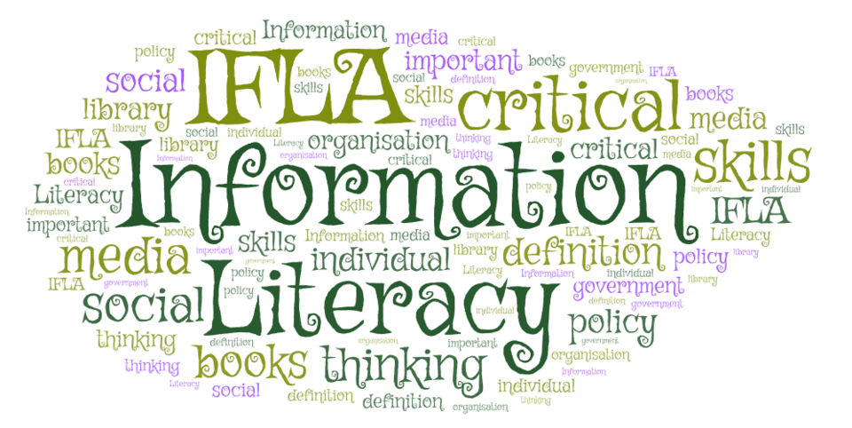

McNabb Middle School Media Center
Information literacy helps students learn how to locate, evaluate, and use information responsibly and effectively. These resources support research skills, source evaluation, citation practice, and academic integrity.
Learn how to identify trustworthy and reliable information sources online.
Credibel Sources PresentationExplore citation tools to correctly credit information and avoid plagiarism.
How to Cite Sources in MLA formatAccess research tools and primary source collections to support inquiry and learning.
Library of Congress Research GuidesLearn strategies for paraphrasing, citing, and using information ethically.
5 Ways to Avoid Plagiarism